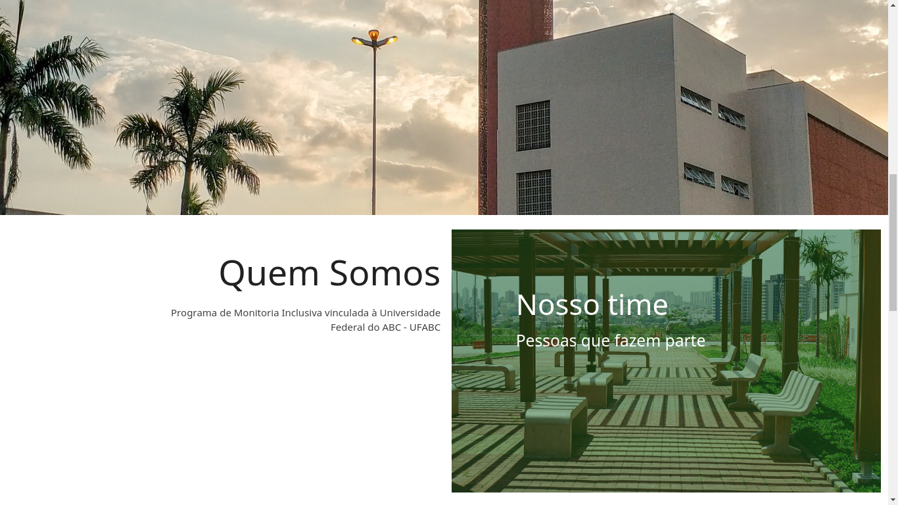
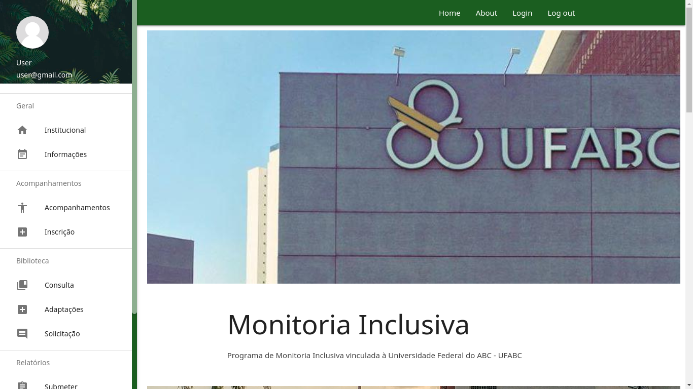
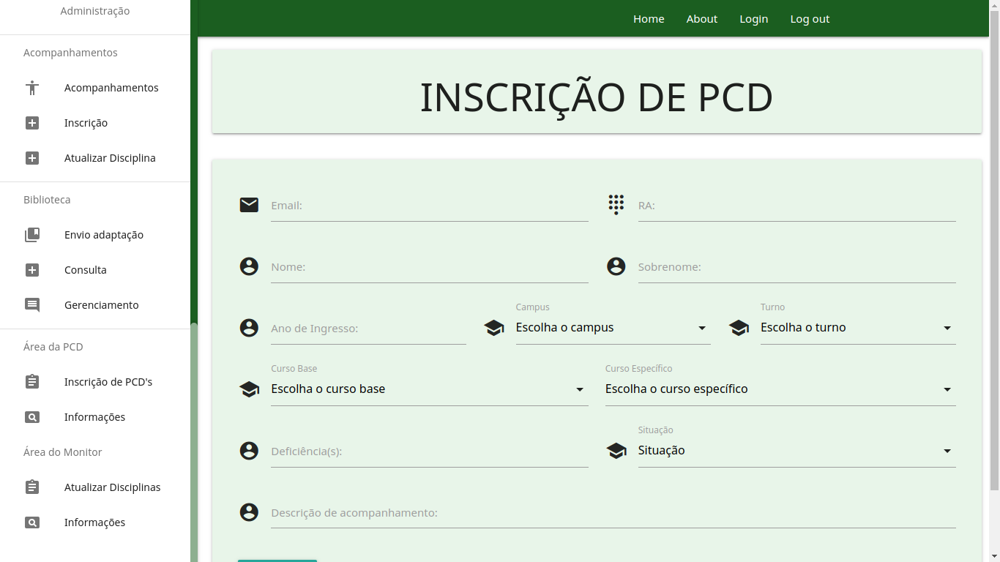

Monitoring Activity Management

Inclusive Monitor is a program offered by PROAP at UFABC and the main goal is to provide support to the PwD – person with a disability, and the main activities from Monitors are accompaniment and material adaptation. To manage those activities a group of monitors is responsible for manage those activities to the other monitors. This system was proposed to centralize the tasks, better activities control and minimizing the administrative routines errors.
The technologies used to develop the application was:
-
For the BackEnd:
- Firebase;
- NodeJS;
- ExpressJS.
-
For the FrontEnd
- ReactJs;
- Axios;
- MaterializeCSS;
- HTML and CS.
Screenshot


GitHub Repository
FrontEndBackEnd